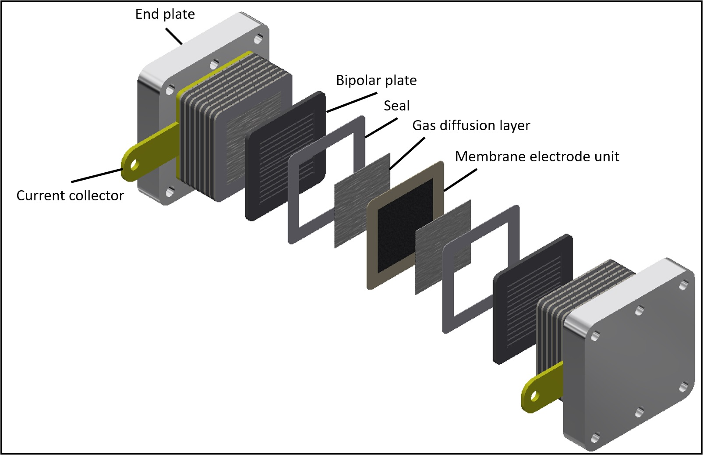
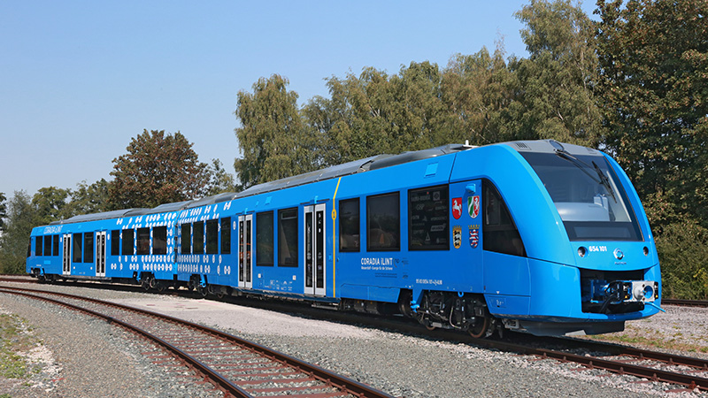

Introduction
What are Fuel Cells?
A fuel cell is a device that generates electricity through an electrochemical reaction, not combustion. In a fuel cell, hydrogen and oxygen are combined to generate electricity, heat, and water. Fuel cells are used today in a range of applications, from providing power to homes and businesses, keeping critical facilities like hospitals, grocery stores, and data centers up and running, and moving a variety of vehicles including cars, buses, trucks, forklifts, trains, and more.
Fuel cell systems are a clean, efficient, reliable, and quiet source of power. Fuel cells do not need to be periodically recharged like batteries, but instead continue to produce electricity as long as a fuel source is provided.
A fuel cell is composed of an anode, cathode, and an electrolyte membrane. A typical fuel cell works by passing hydrogen through the anode of a fuel cell and oxygen through the cathode. At the anode site, a catalyst splits the hydrogen molecules into electrons and protons. The protons pass through the porous electrolyte membrane, while the electrons are forced through a circuit, generating an electric current and excess heat. At the cathode, the protons, electrons, and oxygen combine to produce water molecules. As there are no moving parts, fuel cells operate silently and with extremely high reliability. [1]
How does fuel cell electric engine work?
Fuel cells work like batteries, but they do not run down or need recharging. They produce electricity and heat as long as fuel is supplied. A fuel cell consists of two electrodes—a negative electrode (or anode) and a positive electrode (or cathode)—sandwiched around an electrolyte. A fuel, such as hydrogen, is fed to the anode, and air is fed to the cathode. In a polymer electrolyte membrane fuel cell, a catalyst separates hydrogen atoms into protons and electrons, which take different paths to the cathode. The electrons go through an external circuit, creating a flow of electricity. The protons migrate through the electrolyte to the cathode, where they reunite with oxygen and the electrons to produce water and heat.[2]

How is a fuel cell constructed?

The structure of a fuel cell is similar for all types of fuel cells. A fuel cell always consists of two electrodes, an anode and a cathode. Depending on the type, the current flows in the form of negative electrons from the anode to the cathode or vice versa. Between the anode and the cathode is the electrolyte, which varies depending on the fuel cell type.
In addition to the electrodes and the electrolyte, a fuel cell also consists of two bipolar plates, which ensure that the fuel is evenly supplied to the cell and regulate the delivery of thermal and electrical energy. If several such fuel cells are connected in series, this is called a fuel cell stack or fuel cell stack. Connecting the individual cells in series serves to increase the power of a fuel cell stack. This possibility is a significant advantage of this technology, as it allows for a very flexible scalability of the power.
Applications
The advantage of the flexible power scaling of fuel cell technology makes it possible to apply the technology in many different places. Last but not least, the different types of fuel cells with their different operating characteristics and associated advantages and disadvantages also contribute to the technology having a wide range of applications. The areas of application are divided into portable, mobile and stationary applications.
Portable Applications
Portable applications include fuel cells that operate in a small power range, mostly below 100 watts. In this power range, one can find applications in the camping sector, for example, as a small emergency power generator from the German company SFC Energy. In addition, there is a fuel cell trailer from the company Sunfire Fuel Cells for mobile power and heat supply for single-family households that do not have a gas connection.
But solutions for self-sufficient and off-grid power supply are also already on the market. In portable applications, the DMFC or SOFC types are often used, as both fuel cells can be operated with liquefied gas or methanol, which is easier to store than pure hydrogen.
Vehicle Applications

The mobile applications of fuel cells are particularly in the public focus due to the ambitious climate targets and the automotive location Germany. Fuel cells can be used as energy converters in cars and trucks and the electricity generated by the fuel cell can be used to power an electric motor. If the hydrogen used is green, i.e. produced from renewable energy sources with the help of electrolyzers, the cars and trucks run without CO2 emissions. In cars and trucks, the PEMFC with lightweight metallic bipolar plates are used due to their light weight.
In addition, the fuel cell offers further possibilities in mobile applications. For example, it can be used to power trains that run on non-electrified lines. The first hydrogen train from the French company Alstom has already been running in northern Germany since 2019. But ships can also be powered by fuel cells in the future. Various research projects with PEMFC or DMFC fuel cells are already underway in order to convert shipping to an environmentally friendly drive.
Stationary Applications
Stationary applications of fuel cells are already very widespread in practical use in Japan. Europe has already supported the use of fuel cells through various funding and research projects. The best-known application of fuel cells in the stationary sector is cogeneration with fuel cell heating or fuel cell CHP.
Gas is used, mostly natural gas or biomethane, to produce hydrogen by steam reforming. The hydrogen is then used to operate a fuel cell that generates electricity and heat. Market-ready solutions already exist for single-family homes, but also for small businesses and multi-family homes. The electrical power range of the market-ready products is between 0.75 kW and 5 kW. In this application range, the PEMFC and the SOFC are most widely used.
In addition to applications for electricity and heat generation for buildings, fuel cells are also used in the stationary sector for off-grid emergency power supply or grid backup systems. Due to the easy maintenance of the systems and the easier storage of hydrogen compared to diesel, fuel cells are very well suited to safeguarding radio masts, emergency power systems of substations or other critical infrastructures. PEMFCs and DMFCs are mostly used here.[2]
Type of Fuel Cells
Although the basic operations of all fuel cells are the same, special varieties have been developed to take advantage of different electrolytes and serve different application needs. The fuel and the charged species migrating through the electrolyte may be different, but the principle is the same. An oxidation occurs at the anode, while a reduction occurs at the cathode. The two reactions are connected by a charged species that migrates through the electrolyte and electrons that flow through the external circuit.
Polymer Electrolyte Membrane Fuel Cells
Polymer electrolyte membrane (PEM) fuel cells, also called proton exchange membrane fuel cells, use a proton-conducting polymer membrane as the electrolyte. Hydrogen is typically used as the fuel. These cells operate at relatively low temperatures and can quickly vary their output to meet shifting power demands. PEM fuel cells are the best candidates for powering automobiles. They can also be used for stationary power production. However, due to their low operating temperature, they cannot directly use hydrocarbon fuels, such as natural gas, liquefied natural gas, or ethanol. These fuels must be converted to hydrogen in a fuel reformer to be able to be used by a PEM fuel cell.
Alkaline Fuel Cells
Alkaline fuel cells use an alkaline electrolyte such as potassium hydroxide or an alkaline membrane that conducts hydroxide ions rather than protons. Originally used by the National Aeronautics and Space Administration (NASA) on space missions, alkaline fuel cells are now finding new applications, such as in portable power.
Solid Oxide Fuel Cells
Solid oxide fuel cells use a thin layer of ceramic as a solid electrolyte that conducts oxide ions. They are being developed for use in a variety of stationary power applications, as well as in auxiliary power devices for heavy-duty trucks. Operating at 700°C-1,000°C with zirconia-based electrolytes, and as low as 500°C with ceria-based electrolytes, these fuel cells can internally reform natural gas and biogas, and can be combined with a gas turbine to produce electrical efficiencies as high as 75%.[2]
...